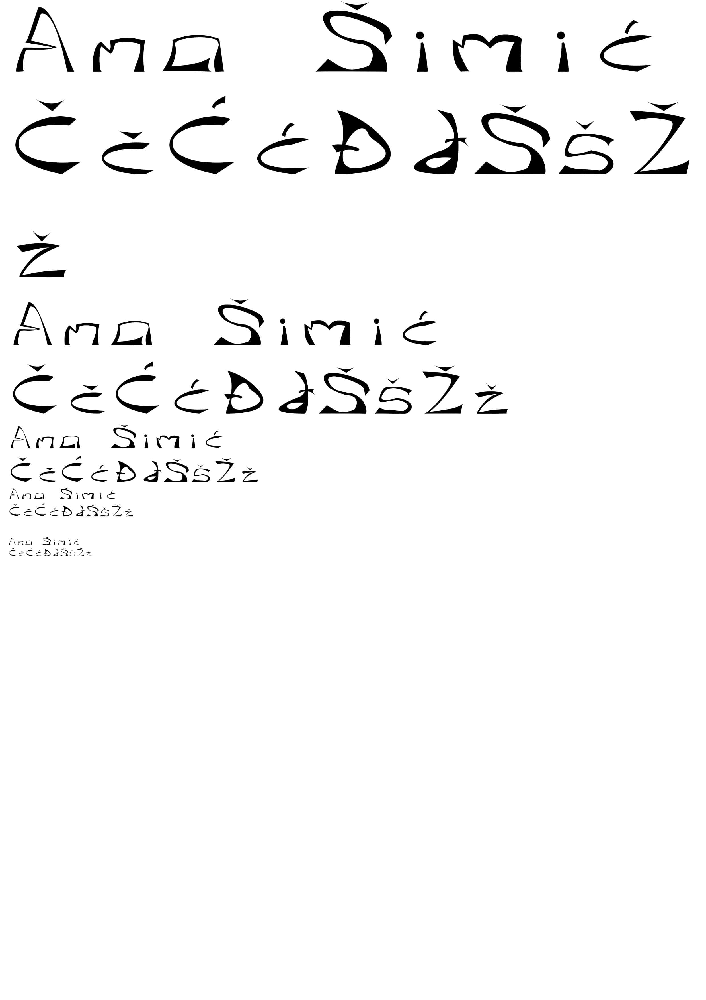
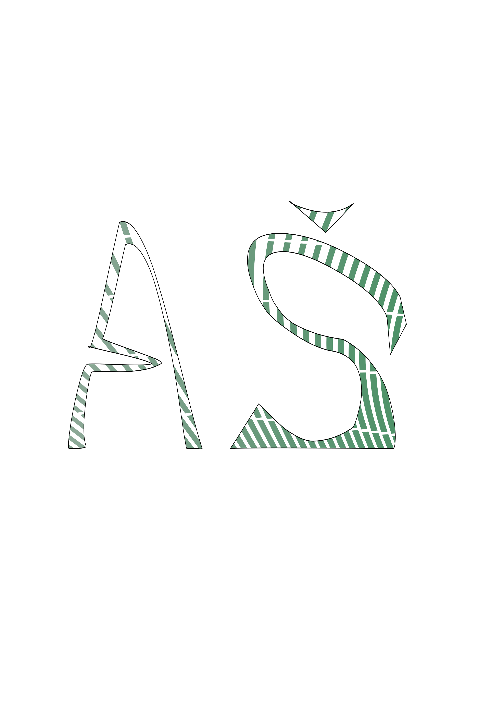
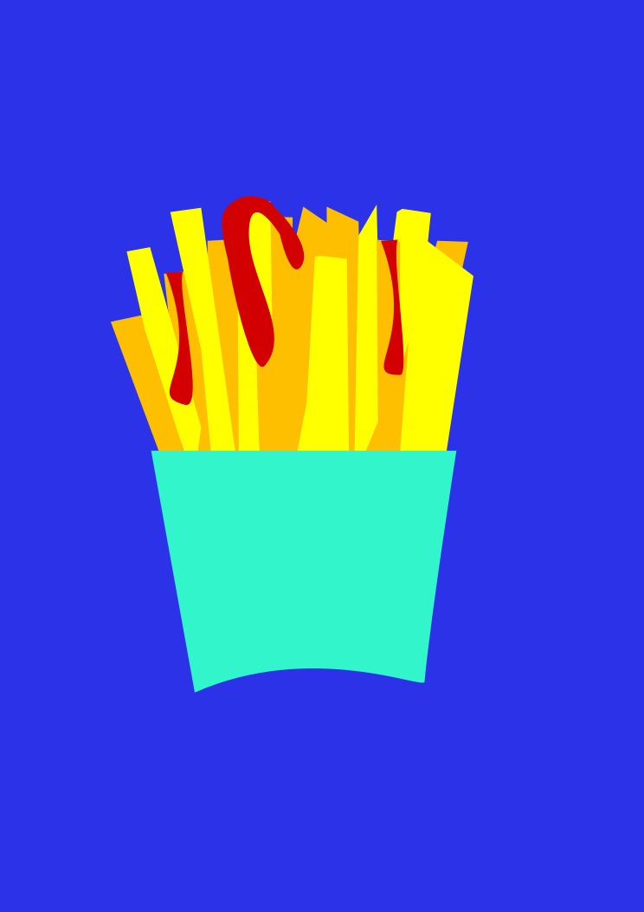
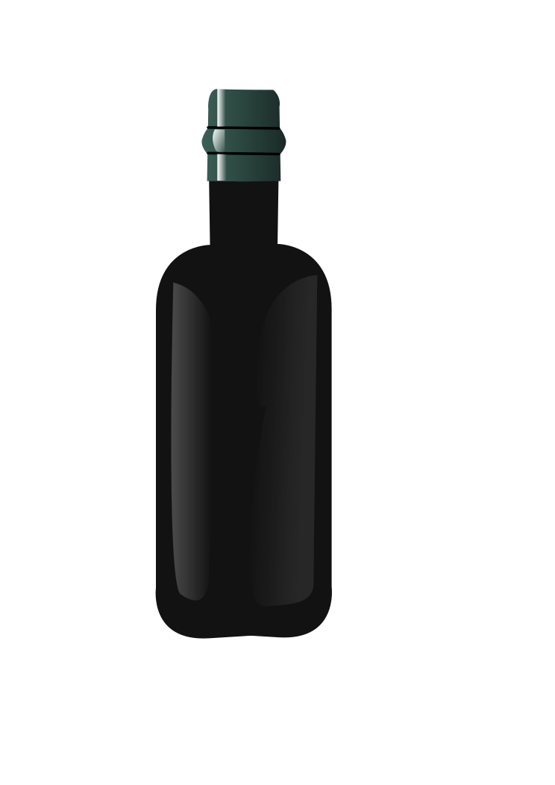
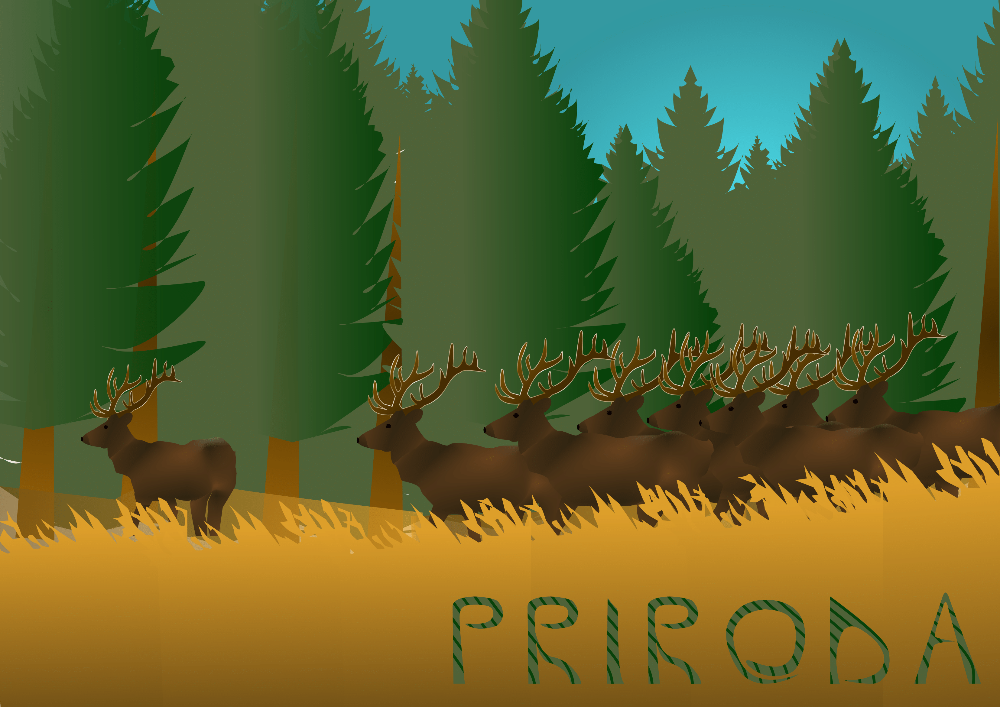
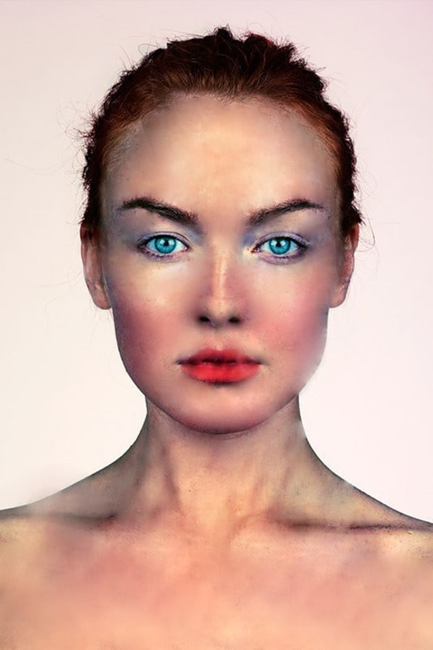
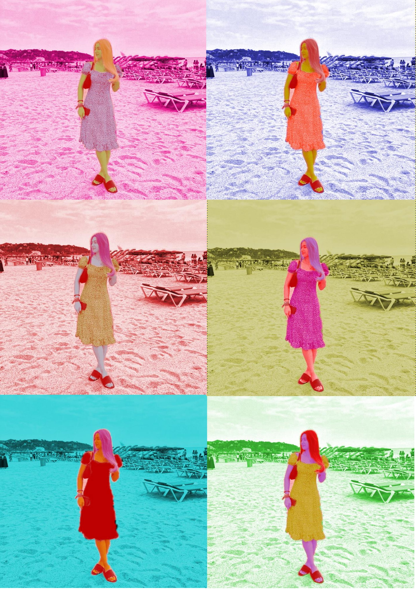
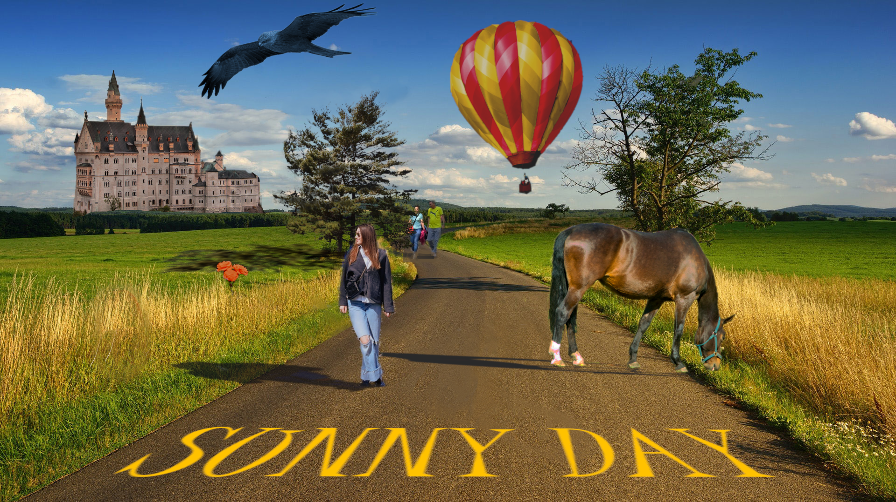

Vježba 1 - font
Vježba 2 - Bezierova krivulja
Vježba 3 - boja, transformacije
Vježba 4 - gradijenti, transparencija
Projektni zadatak 1
Vježba 5 - retuširanje
Vježba 6 - koloriranje
Vježba 7 - fotomontaža

Projektni zadatak 2
Vježba 8 - cinemagraf

Vježba 9 - video obrada
Vježba 10 - web stranica u HTML-u
web stranica vježbe 10